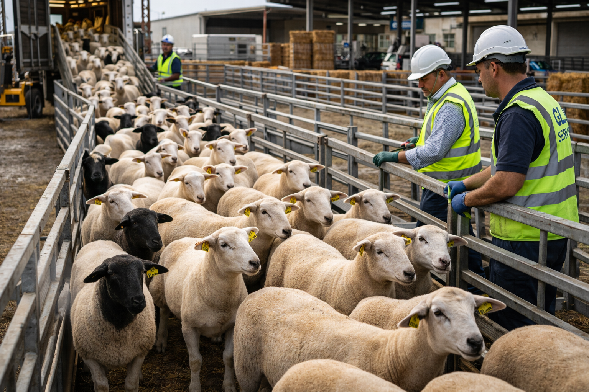

Arroz Basmati y no-Basmati 17 variedades desde India. Frijoles 9 variedades desde Argentina. Marca propia Aternal Rice. MOQ desde 1 FCL para pequeños importadores, 12.500 MT para compradores institucionales. Basmati and non-Basmati rice 17 varieties from India. Beans 9 varieties from Argentina. Private label Aternal Rice. MOQ from 1 FCL for small importers, 12,500 MT for institutional buyers. أرز بسمتي وغير بسمتي 17 صنفاً من الهند. فاصوليا 9 أصناف من الأرجنتين. علامة Aternal Rice الخاصة. 印度巴斯马蒂和非巴斯马蒂大米17个品种。阿根廷豆类9个品种。自有品牌Aternal Rice。
Arroz · 17 Variedades · IndiaRice · 17 Varieties · Indiaأرز · 17 صنفاً · الهند大米 · 17个品种 · 印度
Grano extra largo, aroma premium. El más exportado de India.Extra long grain, premium aroma. India's most exported variety.
Extra LongGrano largo, aroma intenso. Precio competitivo. Alta demanda Medio Oriente.Long grain, intense aroma. Competitive price. High Middle East demand.
Long GrainGrano tradicional Punjab. Cocción perfecta, sin pegarse.Traditional Punjab grain. Perfect cooking, non-sticky.
TraditionalParboilado. Mayor vida útil. Ideal para distribución a granel.Parboiled. Longer shelf life. Ideal for bulk distribution.
ParboiledIntegral, cáscara conservada. Mercado health & wellness USA.Whole grain, hull retained. USA health & wellness market.
IntegralNo-Basmati. Grano largo fino. Precio económico. Caribe y Latinoamérica.Non-Basmati. Fine long grain. Economic price. Caribbean and Latin America.
Non-BasmatiNo-Basmati. Grano medio. Alta demanda Cuba, Haití y Centroamérica.Non-Basmati. Medium grain. High demand Cuba, Haiti and Central America.
Medium GrainArroz para cocina del Sur de India. Mercado étnico USA y Europa.South Indian cooking rice. Ethnic market USA and Europe.
EthnicAternal Rice es la marca propia de arroz del GLV Global Holding. Disponible en todas las variedades Basmati y no-Basmati. Empaque personalizable para distribuidores, supermercados y cadenas de retail. MOQ 1 FCL para etiqueta privada. Aternal Rice is the GLV Global Holding's own rice brand. Available in all Basmati and non-Basmati varieties. Customizable packaging for distributors, supermarkets and retail chains. MOQ 1 FCL for private label. Aternal Rice هي العلامة التجارية الخاصة للأرز لمجموعة GLV. متاحة بجميع أصناف البسمتي وغيرها. Aternal Rice是GLV全球控股集团的自有大米品牌。所有品种可提供定制包装。
Legumbres & CerealesPulses & Cerealsالبقوليات والحبوب豆类与粮食
Frijol Colorado Claro, Oscuro, Negro Brillante, Pinto, Cranberry, Alubia Blanca, Kidney, Canario y Ojo de Cabra. Origen Argentina. Estándares SENASA. Trazabilidad verificada. Disponible en sacos 50kg y a granel.Light Red, Dark Red, Black, Pinto, Cranberry, White Alubia, Kidney, Canario and Goat Eye beans. Argentina origin. SENASA standards. Verified traceability. Available in 50kg bags and bulk.فاصوليا بألوان وأصناف متعددة. الأرجنتين. معايير SENASA. تتبع موثق.9个品种豆类。阿根廷产地。SENASA标准。可追溯。50kg袋装和散装。
Garbanzo Kabuli de Argentina en calibres 7mm, 8mm y 9mm. Alta demanda Medio Oriente, Europa y USA. Certificación Halal disponible. Empaque en sacos 50kg o Big Bag. Destino desde Miami.Kabuli chickpeas from Argentina in 7mm, 8mm and 9mm calibers. High demand Middle East, Europe and USA. Halal certification available. Packaging in 50kg bags or Big Bag. Destination from Miami.حمص كابولي من الأرجنتين بمعايرة 7 و8 و9 ملم. طلب مرتفع في الشرق الأوسط. Halal متاح.阿根廷卡布里鹰嘴豆，7mm、8mm、9mm规格。中东、欧洲和美国需求旺盛。可提供清真认证。
Maíz amarillo duro grado alimento y grado forraje. Colombia y Argentina. MOQ 1 FCL. Humedad máx 14%. Aflatoxina controlada. Documentación SENASA e ICA disponible para todos los destinos.Hard yellow corn food grade and feed grade. Colombia and Argentina. MOQ 1 FCL. Max moisture 14%. Controlled aflatoxin. SENASA and ICA documentation available for all destinations.ذرة صفراء صلبة جودة غذائية وعلفية. MOQ 1 FCL. رطوبة 14% كحد أقصى.硬质黄玉米，食品级和饲料级。最低订量1 FCL。水分最高14%。
Trigo pan, duro y candeal desde Argentina. Soya en grano non-GMO disponible. Para molineros, industriales y traders. Certificación SENASA. FOB Buenos Aires o Rosario. Canal directo desde Miami.Bread, durum and candeal wheat from Argentina. Non-GMO soybean available. For millers, industrials and traders. SENASA certification. FOB Buenos Aires or Rosario. Direct channel from Miami.قمح خبز وصلب من الأرجنتين. صويا non-GMO متاحة. شهادة SENASA.阿根廷面包小麦、硬质小麦和杜伦小麦。非转基因大豆可选。SENASA认证。
GLV Global Food Services LLC — Miami, Florida
Basmati 17 variedades, frijoles 9 variedades, garbanzos, maíz, trigo. MOQ desde 1 FCL. Respondemos en menos de 24h. Basmati 17 varieties, beans 9 varieties, chickpeas, corn, wheat. MOQ from 1 FCL. We respond in under 24h. أرز بسمتي 17 صنفاً. يستجيب فريقنا في أقل من 24 ساعة. 巴斯马蒂大米17个品种。最低1 FCL起订。24小时内响应。